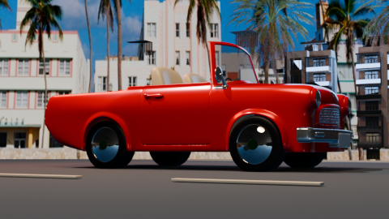
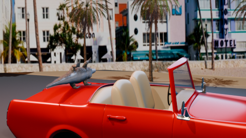
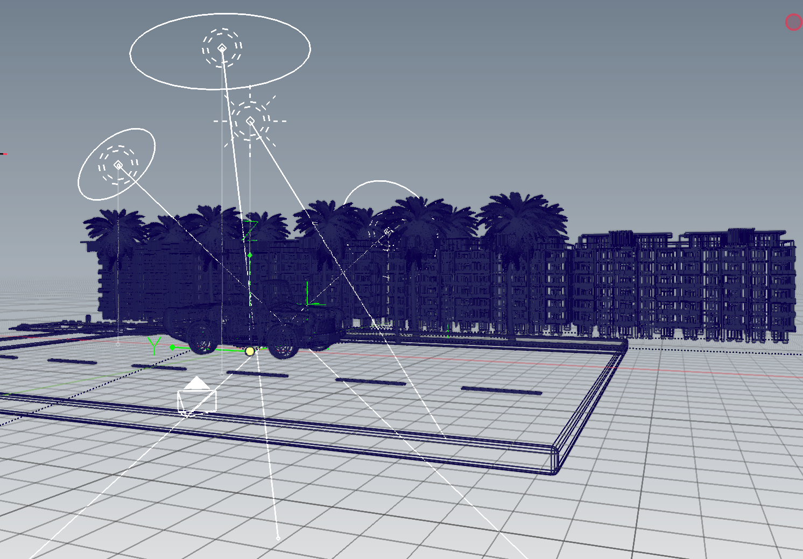

02RENDER
ESCENA FINAL
El descapotable rojo llega al paseo
Render de la escena con el coche, la arquitectura art déco y las palmeras del paseo marítimo.
Ver renderDiario de producción · 2026
Un laboratorio visual para construir una máquina original y colocarla en el lado más húmedo, eléctrico y peligroso de GTA VI.
RENDER PRINCIPAL
PRÓXIMAMENTE
01 / Registro
Cada entrada será una huella del proceso: referencias, decisiones, modelado, materiales y luz.

02RENDER
ESCENA FINAL
Render de la escena con el coche, la arquitectura art déco y las palmeras del paseo marítimo.
Ver render
01ANIMACIÓN
PRUEBA DE 10 S
Primera prueba de la escena animada: un descapotable rojo frente a los edificios art déco.
Ver imagen
03BLENDER
VISTA DE ESCENA
Vista general del montaje 3D: coche, palmeras, edificios art déco, carretera e iluminación preparados para el render.
Ver capturaREFERENCIAS
Y DIRECCIÓN
La primera decisión define todo: silueta, personalidad, escenario y la historia que contará el render.
Leer entradaBLOCKOUT
DE SILUETA
La fase donde el coche empieza a existir antes de tener detalles.
Reservar entradaLUZ Y
ATMÓSFERA
Color, clima y composición para convertir un modelo en una imagen con memoria.
Reservar entradaLa misión
El concurso exige un coche modelado por el artista, un entorno 3D, una historia visible y un WIP que demuestre el proceso. La categoría de animación permite llevar la misma escena hasta 30 segundos.
Ver reglas oficiales